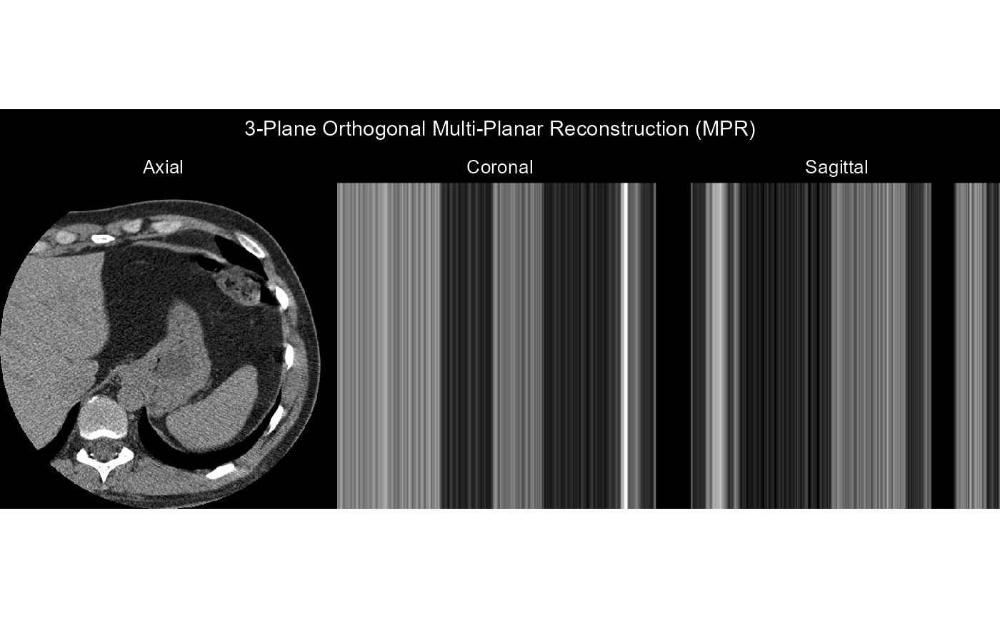
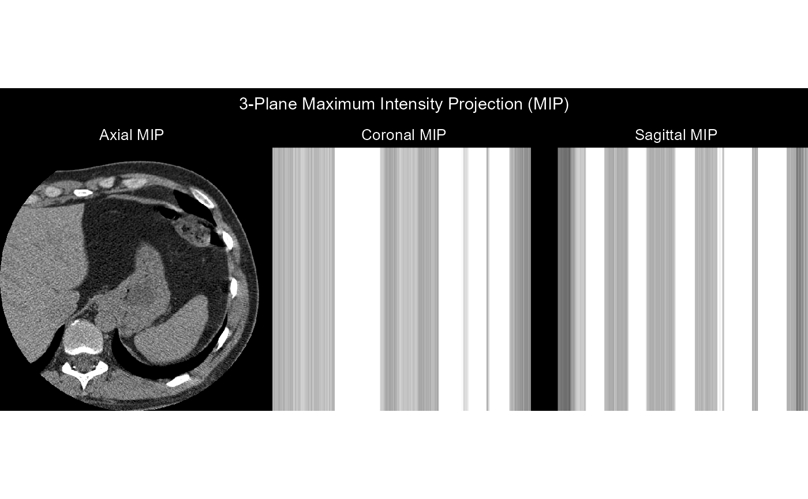

Render a 3D DICOM Volume (Orthogonal MPR, MIP, or Interactive rgl 3D)
Source:R/volume.R
render_volume.RdVisualizes a 3D DICOM series ("dicom_series" or 3D numeric array) using:
"mpr": 3-plane Orthogonal Multi-Planar Reconstruction (Axial, Coronal, Sagittal slices) viaggplot2."mip": Maximum Intensity Projection across Axial, Coronal, and Sagittal orientations viaggplot2."rgl": Interactive 3D voxel rendering using therglpackage (falls back to"mip"ifrglis not installed).
Arguments
- x
A
"dicom_series"object (fromread_dicom_series()), a 3D numeric array[rows, cols, slices], or a directory/vector of DICOM file paths.- method
Visualization mode:
"mpr"(default),"mip", or"rgl".- window
Window preset (
"auto","brain","lung","bone", etc.) orc(center, width). Default is"auto".- threshold
Optional intensity threshold in
[0, 1]for 3D"rgl"point-cloud / surface rendering. Default is0.5.- palette
Color palette (
"gray","viridis","inferno","magma","plasma"). Default is"gray".
Value
A ggplot2::ggplot object (for "mpr" and "mip") or invisibly the
rgl scene ID (for "rgl").
Examples
dcm_file <- system.file("extdata", "example.dcm", package = "dicomtk")
series <- read_dicom_series(c(dcm_file, dcm_file, dcm_file))
render_volume(series, method = "mpr")

render_volume(series, method = "mip")
